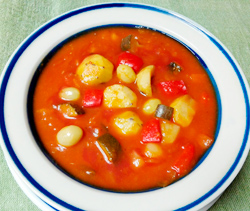

栗とギンナンのミネストローネ
- 調理時間：30分
- （一人当たり）
- カロリー：258kcal
- たんぱく質：5.0g
- 脂質：8.4g
- 炭水化物：43.2g
- 塩分：1.4g


＜2人分＞
- トマト（大きめの角切り）
- 200g
- トマトジュース
- 適宜
- ・玉ねぎ
（皮をむいて角切り） - 1個
- ・人参
（皮をむいて、角切り） - 50g
- ・カボチャ
（種を取り除き、角切り） - 100g
- ・パプリカ
（種を取り除き、角切り） - 1/2個
A
- 栗（茹でて殻をむく）
- 5～6個
- ギンナン（ゆで）
- 大さじ1
- オリーブオイル
- 大さじ1
- ローリエ
- 1枚
- 塩、コショウ
- 少々


- 野菜などの材料は、指定の通りに下準備しておく。
- 鍋に、オリーブオイルをいれて、Aの野菜を炒める。
香りが出てきたら、トマト、ローリエを加える。
トマトジュースは、具材が隠れるくらいにヒタヒタになるように加え、フタをして具材が柔らかくなるまで煮る。 - 具材がやわらかく煮えたら、茹でた栗とギンナンを加えて、温める。
- 塩、コショウで味をととのえ、器に盛り付ける。
栗とギンナンのミネストローネ
ヨーロッパでは、「トマトが赤くなると医者が青くなる」、「トマトをつくる家には病人なし」ということわざがあります。トマトはビタミン類が豊富に含まれるので、たくさん食べる季節になると、病人が減るところから出たものでしょう。
ミネストローネは、イタリア料理で「具材が豊富なスープ」を指します。今回は、秋の味覚の栗やギンナンを具材に選びました。栗は、アーモンドやクルミなどと同じように種子を食べる種実類です。種の部分に当たるので生命力もたくさんで糖質や食物繊維などの栄養素も豊富。季節の食材をおいしくいただきましょう。